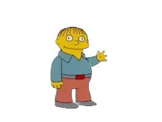
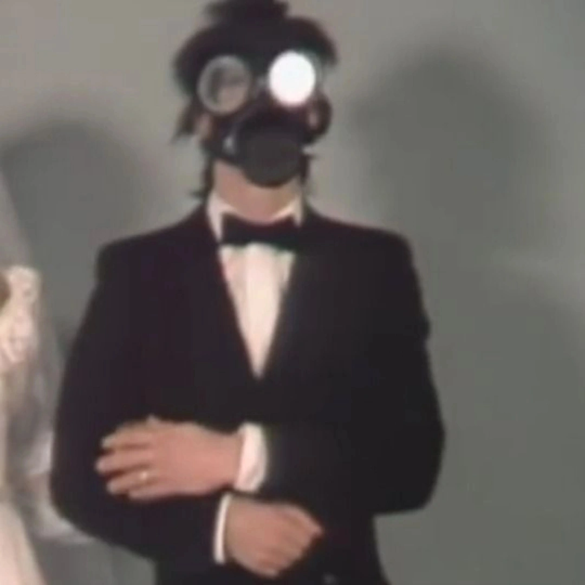

About Me
Hello! I'm Vageesh Mishra, a passionate developer working on the 30 Days of Code Challenge.
This is a brief overview of who I am and what I do.

Hello
My Background
I have a keen interest in web development and programming. Through this challenge, I aim to enhance my skills
in HTML, CSS, Python, and Java.
In my free time, I enjoy exploring new technologies and working on personal projects.
As part of the 30 Days of Code Challenge, I have successfully created my first webpage and a weather update
project using APIs.
I am continuously learning and looking forward to building more projects in the future.

this is my profile on socials
My Socials
These are my socials if you want to connect with me.
Experience and Achievements
- Developed a weather update application using APIs.
- Completed various coding challenges to improve problem-solving skills.
- Enhanced my skills in HTML, CSS, Python, and Java.
I am proud of the progress I've made so far and am excited about the opportunities ahead.
Strengths and interest
- Strong problem-solving skills.
- Passionate about learning new technologies.
- Interested in web development and programming.